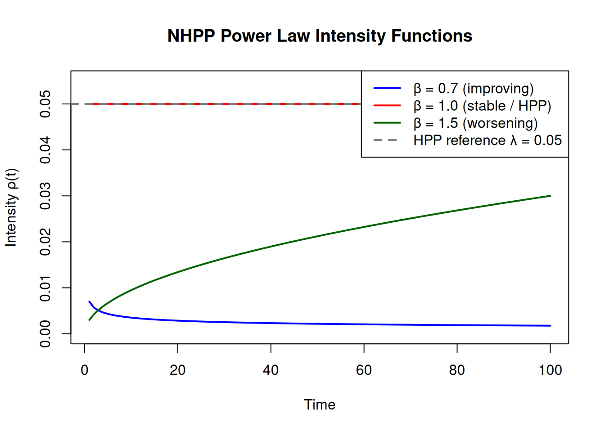
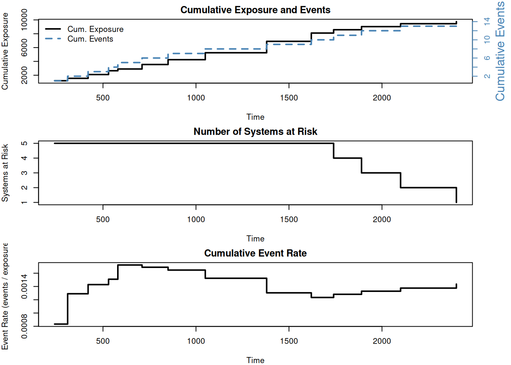
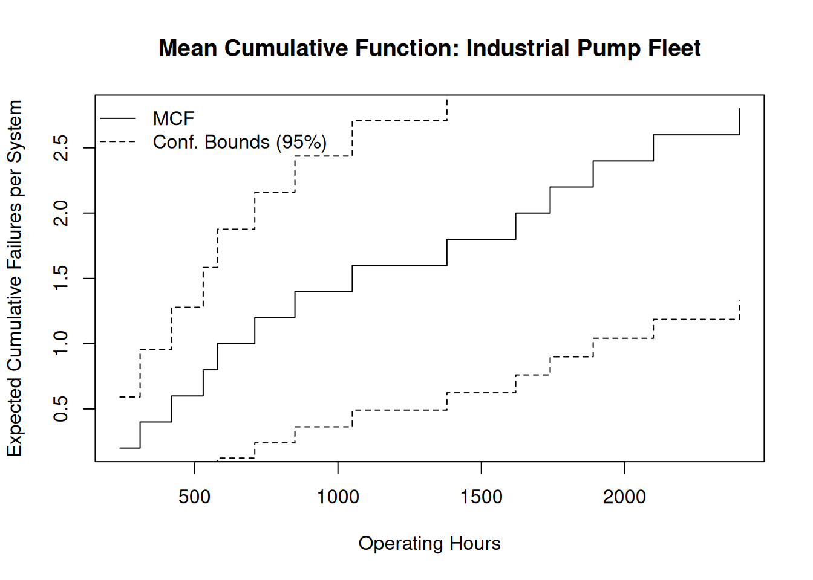
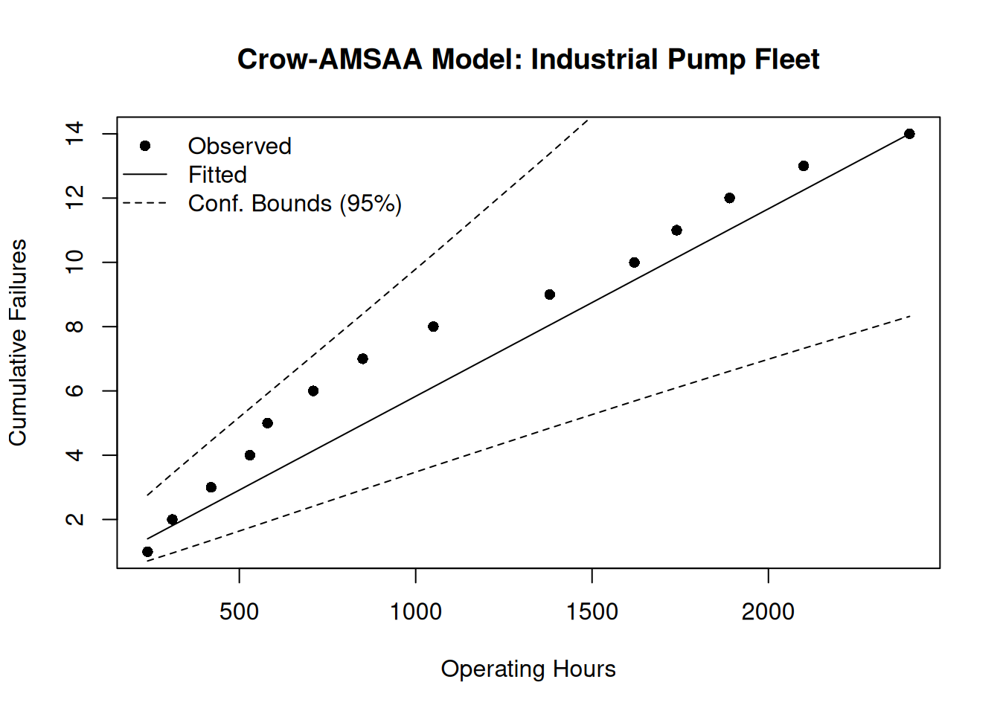
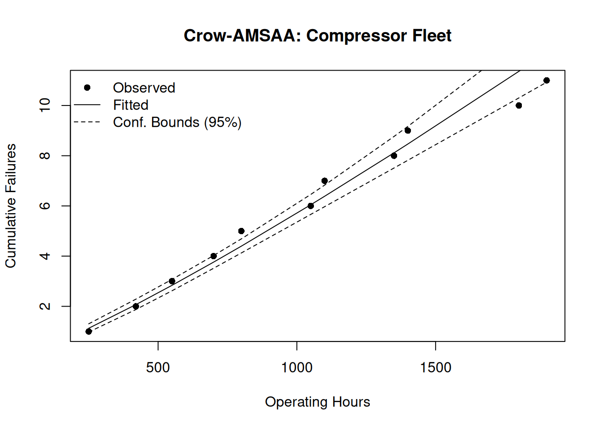
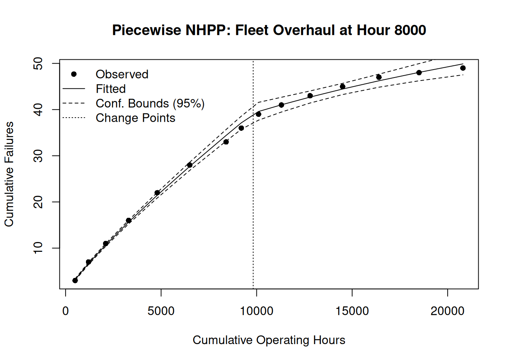

library(ReliaGrowR)6 Repairable Systems Analysis
6.1 Introduction
Unlike life data analysis (Chapter 3), which focuses on the time to first failure of non-repairable components, Repairable Systems Analysis (Ascher and Feingold 1984; Meeker and Escobar 1998) models the entire sequence of recurring failures on a single system or fleet. This chapter covers the foundational theory and the ReliaGrowR tools for fitting models, computing fleet-level exposure, and estimating the Mean Cumulative Function.
6.2 Learning Objectives
By the end of this chapter, you will be able to:
- Define the distinction between repairable and non-repairable systems.
- Explain the Homogeneous Poisson Process (HPP) and Non-Homogeneous Poisson Process (NHPP).
- Describe the Power Law Process and its parameters.
- Compute fleet-level exposure using
exposure(). - Estimate the Mean Cumulative Function (MCF) using
mcf(). - Fit and interpret the Crow-AMSAA model using
nhpp()from ReliaGrowR. - Apply the Piecewise NHPP model to detect changes in failure behavior.
- Forecast future failure counts from a fitted Power Law model.
The ReliaGrowR package (Govan 2024) provides functions for repairable systems analysis in R.
6.3 Repairable vs Non-Repairable Systems
A non-repairable system is discarded after failure and replaced with a new, statistically identical unit. The unit of analysis is the time to first failure. Weibull analysis applies.
A repairable system is restored to service after each failure and continues accumulating operating time. The unit of analysis is the sequence of inter-failure times or cumulative failure counts over the system’s life.
Two repair assumptions are common:
| Repair type | Description | Model |
|---|---|---|
| Perfect repair | As-good-as-new after each repair | Renewal process |
| Minimal repair | As-bad-as-old — failure fixed, nothing else changed | NHPP |
Most field maintenance data best fits the minimal repair assumption, making NHPP the standard framework.
The recurrence rate (intensity function) \(\rho(t)\) is the instantaneous rate of failure occurrence at time \(t\):
\[\rho(t) = \frac{d\,E[N(t)]}{dt}\]
6.4 Failure Processes: HPP and NHPP
Homogeneous Poisson Process (HPP)
The HPP assumes a constant failure rate \(\lambda\) throughout the system’s life:
\[E[N(t)] = \lambda t \qquad \rho(t) = \lambda \qquad \text{MTBF} = 1/\lambda\]
The HPP is appropriate when failures occur at random with no trend.
Non-Homogeneous Poisson Process (NHPP)
The NHPP allows the intensity function to change with time:
\[\rho(t) = \frac{d\Lambda(t)}{dt}\]
When \(\rho(t)\) increases, the system is deteriorating; when it decreases, the system is improving.
t <- seq(1, 100, by = 1)
# HPP (constant rate)
hpp_intensity <- rep(0.05, length(t))
# NHPP Power Law scenarios
nhpp_improving <- 0.01 * 0.7 * t^(0.7 - 1) # beta = 0.7
nhpp_stable <- 0.05 * 1.0 * t^(1.0 - 1) # beta = 1.0
nhpp_worsening <- 0.002 * 1.5 * t^(1.5 - 1) # beta = 1.5
ylim_max <- max(c(hpp_intensity, nhpp_improving, nhpp_stable, nhpp_worsening)) * 1.1
plot(t, nhpp_improving, type = "l", col = "blue", lwd = 2,
ylim = c(0, ylim_max),
xlab = "Time", ylab = "Intensity ρ(t)",
main = "NHPP Power Law Intensity Functions")
lines(t, nhpp_stable, col = "red", lwd = 2)
lines(t, nhpp_worsening, col = "darkgreen", lwd = 2)
abline(h = 0.05, col = "gray50", lwd = 2, lty = 2)
legend("topright",
legend = c("β = 0.7 (improving)", "β = 1.0 (stable / HPP)",
"β = 1.5 (worsening)", "HPP reference λ = 0.05"),
col = c("blue", "red", "darkgreen", "gray50"),
lwd = 2, lty = c(1, 1, 1, 2))
6.5 The Power Law Process
The Power Law Process is the most widely used NHPP for repairable systems:
\[E[N(t)] = \lambda t^{\beta} \qquad \rho(t) = \lambda \beta t^{\beta-1}\]
Parameter interpretation:
- \(\lambda > 0\) — scale parameter; overall magnitude of the failure rate.
- \(\beta < 1\): decreasing intensity (system improving).
- \(\beta = 1\): constant intensity = HPP.
- \(\beta > 1\): increasing intensity (system deteriorating).
The instantaneous MTBF at time \(t\):
\[\text{MTBF}(t) = \frac{1}{\rho(t)} = \frac{1}{\lambda\beta\,t^{\beta-1}}\]
Maximum likelihood estimates given \(n\) failures at times \(t_1 < \cdots < t_n\) over total time \(T\):
\[\hat{\beta} = \frac{n}{\displaystyle\sum_{i=1}^{n} \ln(T/t_i)} \qquad \hat{\lambda} = \frac{n}{T^{\hat{\beta}}}\]
TipReview
A repairable system is observed to have an increasing failure rate over time. Which model is most appropriate?
Answer
NHPP Power Law with \(\beta > 1\). An increasing intensity function is characteristic of a deteriorating system. HPP (constant rate) cannot capture this trend.6.6 Exposure Analysis
When analyzing a fleet, individual units enter and leave observation at different times. Exposure is the total operating time accumulated across all units currently at risk.
The exposure() function computes: - Cumulative exposure — total system-time at risk up to each event time. - Number at risk — how many units were under observation at each time. - Event rate — cumulative events divided by cumulative exposure.
pump_data <- data.frame(
id = c(1, 1, 1, 2, 2, 2, 3, 3, 4, 4, 4, 4, 5, 5),
time = c(310, 850, 1620, 420, 1050, 2100, 580, 1890, 240, 710, 1380, 2400, 530, 1740),
event = c(1, 1, 1, 1, 1, 1, 1, 1, 1, 1, 1, 1, 1, 1)
)
exp_result <- exposure(id = pump_data$id, time = pump_data$time,
event = pump_data$event)
plot(exp_result)
exp_result is a data frame containing three columns: cum_exposure (total system-time accumulated across all units at risk), n_risk (number of units under observation at each time), and event_rate (cumulative events divided by cumulative exposure). The exposure plot shows how total observed system-time accumulates and how the fleet-wide event rate behaves over time.
TipReview
Why is it important to account for exposure when comparing failure rates across systems with different observation periods?
Answer
Without normalizing by exposure, a system observed for twice as long will appear to have twice as many failures even if its underlying rate is identical. Exposure provides the denominator — failures per unit time — so rates can be compared fairly.6.7 Mean Cumulative Function
The Mean Cumulative Function (MCF) is a non-parametric estimate of the expected cumulative number of failures per system as a function of time. It makes no distributional assumptions and handles systems with different observation periods.
The Nelson-Aalen estimator is a non-parametric method that requires no distributional assumption and naturally handles systems with different observation lengths (administrative censoring):
\[\hat{M}(t) = \sum_{t_j \leq t} \frac{d_j}{n_j}\]
where \(d_j\) is the number of failures at time \(t_j\) and \(n_j\) is the number of systems at risk at \(t_j\).
Pass end_time to mcf() when systems were observed beyond their last recorded failure — otherwise the risk set is deflated too early, inflating the rate estimate.
end_times <- c("1" = 3000, "2" = 3000, "3" = 3000, "4" = 3000, "5" = 3000)
mcf_result <- mcf(id = pump_data$id, time = pump_data$time,
event = pump_data$event,
end_time = end_times)
plot(mcf_result,
main = "Mean Cumulative Function: Industrial Pump Fleet",
xlab = "Operating Hours",
ylab = "Expected Cumulative Failures per System")
The slope of the MCF reveals the recurrence trend: steepening = increasing failure rate; flattening = improving.
NoteTry It
Three systems were observed with the following failure times. Each was observed until hour 2000. Compute and plot the MCF.
id <- c(rep("1", 3), rep("2", 4), rep("3", 2))
time <- c(400, 900, 1500, 300, 700, 1200, 1800, 600, 1400)
event <- rep(1, 9)
end_times2 <- c("1" = 2000, "2" = 2000, "3" = 2000)
# fit <- mcf(id, time, event, end_time = end_times2)
# plot(fit)Solution
id <- c(rep("1", 3), rep("2", 4), rep("3", 2))
time <- c(400, 900, 1500, 300, 700, 1200, 1800, 600, 1400)
event <- rep(1, 9)
end_times2 <- c("1" = 2000, "2" = 2000, "3" = 2000)
fit <- mcf(id = id, time = time, event = event, end_time = end_times2)
plot(fit, main = "MCF Example", xlab = "Time (hours)", ylab = "MCF")
6.8 NHPP Analysis with nhpp()
The nhpp() function fits the Power Law Process (Crow-AMSAA model) (Crow 1975) to individual failure event data by maximum likelihood, returning estimates of \(\lambda\) and \(\beta\).
A curve that bends downward (concave) indicates \(\hat{\beta} < 1\) — improving system. Upward bending (convex) indicates \(\hat{\beta} > 1\) — deteriorating system.
# pump_data defined above in the Exposure section
failure_times <- sort(pump_data$time[pump_data$event == 1])
fit <- nhpp(time = failure_times, event = rep(1, length(failure_times)))
plot(fit,
main = "Crow-AMSAA Model: Industrial Pump Fleet",
xlab = "Operating Hours",
ylab = "Cumulative Failures")
The concave curve and \(\hat{\beta} < 1\) indicate the pump fleet’s failure rate is decreasing — a favorable operating regime.
NoteTry It
A compressor fleet recorded individual failure times across five systems. Fit a Power Law model using nhpp() with method = "LS".
comp_times <- c(250, 800, 1400, 550, 1100, 1900, 700, 1350, 420, 1050, 1800)
# fit <- nhpp(time = comp_times, event = rep(1, length(comp_times)), method = "LS")
# plot(fit)Solution
comp_times <- c(250, 800, 1400, 550, 1100, 1900, 700, 1350, 420, 1050, 1800)
fit <- nhpp(time = sort(comp_times),
event = rep(1, length(comp_times)), method = "LS")
plot(fit, main = "Crow-AMSAA: Compressor Fleet",
xlab = "Operating Hours", ylab = "Cumulative Failures")
6.9 Piecewise NHPP
The Piecewise NHPP (Guo et al. 2010) fits a separate Power Law to each segment of the time axis, allowing for structural changes in failure behavior (overhauls, design modifications, operational changes):
\[E[N(t)] = \begin{cases} \lambda_1 t^{\beta_1} & 0 < t \leq \tau \\ E[N(\tau)] + \lambda_2(t-\tau)^{\beta_2} & t > \tau \end{cases}\]
Pass a breakpoint estimate via the breaks argument. The segmented algorithm then optimizes the breakpoint location from the data.
times2 <- c(500, 1200, 2100, 3300, 4800, 6500, 8400, 9200, 10100, 11300,
12800, 14500, 16400, 18500, 20800)
failures2 <- c(3, 4, 4, 5, 6, 6, 5, 3, 3, 2, 2, 2, 2, 1, 1)
fit_pw <- nhpp(time = times2, event = failures2, breaks = 8000, method = "LS")
plot(fit_pw,
main = "Piecewise NHPP: Fleet Overhaul at Hour 8000",
xlab = "Cumulative Operating Hours",
ylab = "Cumulative Failures")
The first segment (pre-overhaul, steeper slope) gives way to a flatter or downward-bending second segment, confirming the overhaul reduced the failure rate. The fitted breakpoint may differ slightly from the input value — here it is estimated near hour 9,820.
TipReview
What is the primary reason to use a Piecewise NHPP instead of a single Crow-AMSAA model?
Answer
To account for a known or suspected structural change in the failure process (overhaul, design change, operational change). A piecewise model fits each segment independently, capturing the change in failure behavior.6.10 Interpreting Results and Predicting Future Failures
Reading \(\hat{\beta}\)
| \(\hat{\beta}\) | Interpretation | Typical cause |
|---|---|---|
| \(< 1\) | Decreasing failure rate | Effective maintenance, infant mortality resolved |
| \(= 1\) | Constant failure rate | Random external shocks |
| \(> 1\) | Increasing failure rate | Wear-out, accumulating damage, aging |
Cumulative vs Instantaneous MTBF
- Cumulative MTBF = \(T / N(T)\) — historical average over all observed failures.
- Instantaneous MTBF at time \(t\) = \(1/\rho(t) = 1/(\hat{\lambda}\hat{\beta}\,t^{\hat{\beta}-1})\) — expected time to the next failure.
For \(\hat{\beta} > 1\) (aging system), the instantaneous MTBF falls below the cumulative average at late times — the system’s near-term reliability is worse than its history suggests.
Predicting Future Failures
Expected additional failures from current time \(T\) to a future time \(T + \Delta t\):
\[E[\Delta N] = \hat{\lambda}(T + \Delta t)^{\hat{\beta}} - \hat{\lambda}\, T^{\hat{\beta}}\]
lambda <- 0.0003
beta <- 0.85
T_current <- 15000
T_future <- 17000
expected_add <- lambda * T_future^beta - lambda * T_current^beta
cat("Expected additional failures:", round(expected_add, 2), "\n")Expected additional failures: 0.12
NoteTry It
A system has been operating for 5,000 hours. A Power Law fit yielded \(\lambda = 0.0005\) and \(\beta = 1.2\). Calculate the expected additional failures in the next 1,000 hours.
lambda <- 0.0005
beta <- 1.2
T_current <- 5000
T_future <- 6000
# E[ΔN] = lambda * T_future^beta - lambda * T_current^betaSolution
lambda <- 0.0005
beta <- 1.2
T_current <- 5000
T_future <- 6000
expected_failures <- lambda * T_future^beta - lambda * T_current^beta
cat("Expected additional failures:", round(expected_failures, 2), "\n")Expected additional failures: 3.36
TipReview
A system has a fitted Power Law model with \(\beta = 1.35\). What is the operational implication?
Answer
The failure rate is increasing — wear-out or aging is occurring. The system may be approaching a major overhaul threshold. The instantaneous MTBF is below the cumulative historical average.6.11 Summary
Key takeaways:
- Repairable systems analysis models the sequence of recurring failures, not just the first failure.
- The Power Law Process (\(E[N(t)] = \lambda t^\beta\)) is the standard NHPP for repairable systems.
- \(\hat{\beta}\) determines whether the failure rate is improving (\(< 1\)), stable (\(= 1\)), or worsening (\(> 1\)).
exposure()computes fleet-level operating time at risk.mcf()estimates cumulative failures per system non-parametrically (no distributional assumption).nhpp()fits the Crow-AMSAA model from individual failure times; addbreaksfor piecewise fitting.- Future failure counts: \(E[\Delta N] = \hat{\lambda}(T + \Delta t)^{\hat{\beta}} - \hat{\lambda}\,T^{\hat{\beta}}\).
Ascher, Harold, and Harry Feingold. 1984. Repairable Systems Reliability. Marcel Dekker.
Crow, Larry H. 1975. Reliability Analysis for Complex, Repairable Systems. Army Material Systems Analysis Activity. https://apps.dtic.mil/sti/citations/ADA020296.
Govan, Paul. 2024. ReliaGrowR: Reliability Growth Analysis. https://doi.org/10.32614/CRAN.package.ReliaGrowR.
Guo, H., A. Mettas, G. Sarakakis, and P. Niu. 2010. “Piecewise NHPP Models with Maximum Likelihood Estimation for Repairable Systems.” 2010 Proceedings – Annual Reliability and Maintainability Symposium (RAMS), 1–7. https://doi.org/10.1109/RAMS.2010.5448029.
Meeker, William Q., and Luis A. Escobar. 1998. Statistical Methods for Reliability Data. Wiley-Interscience.